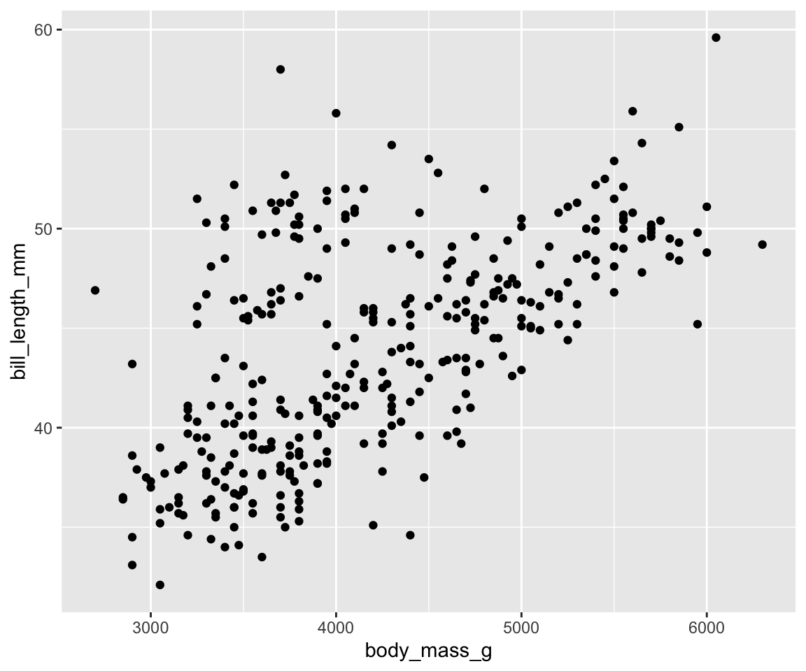
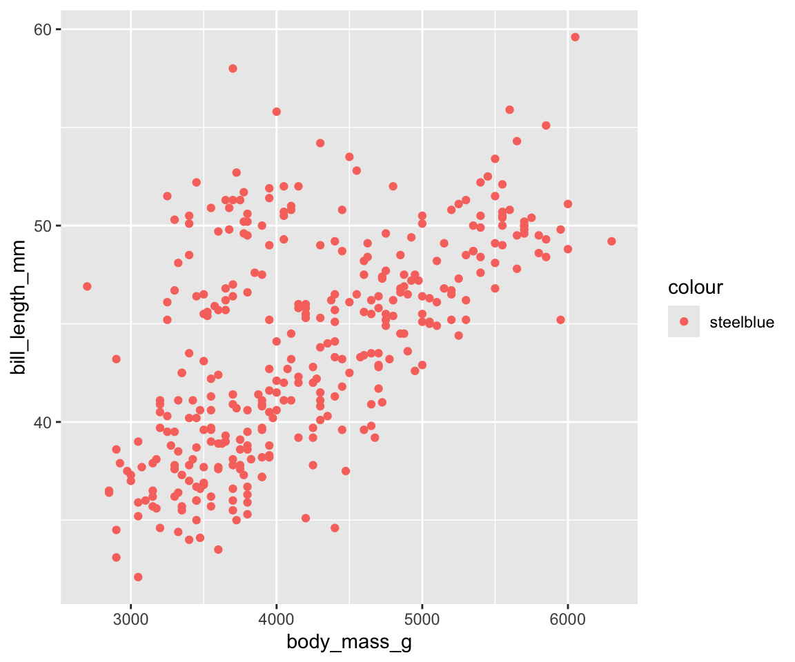
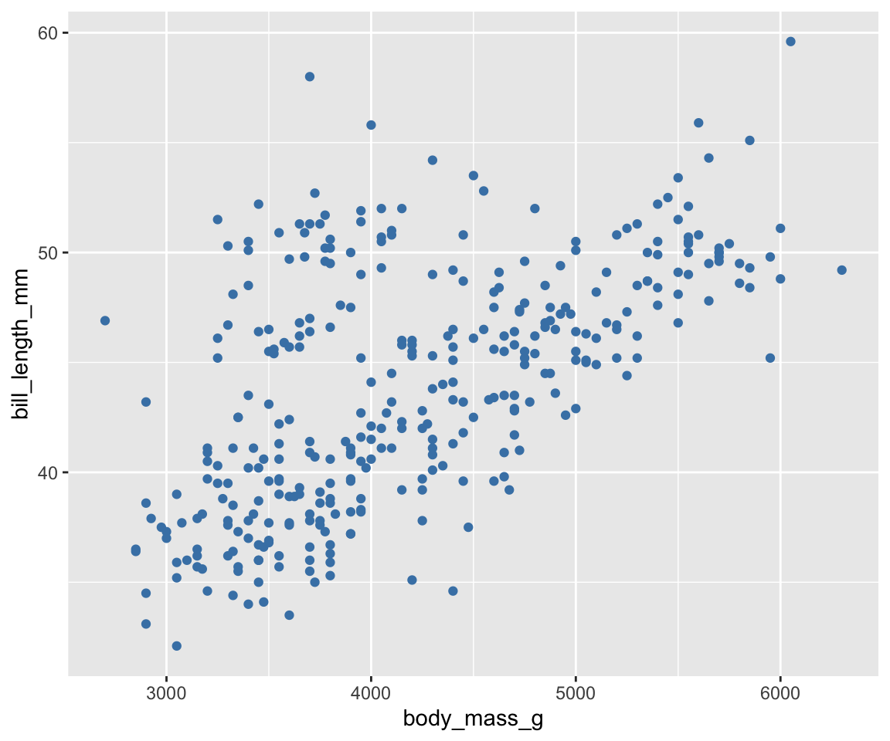
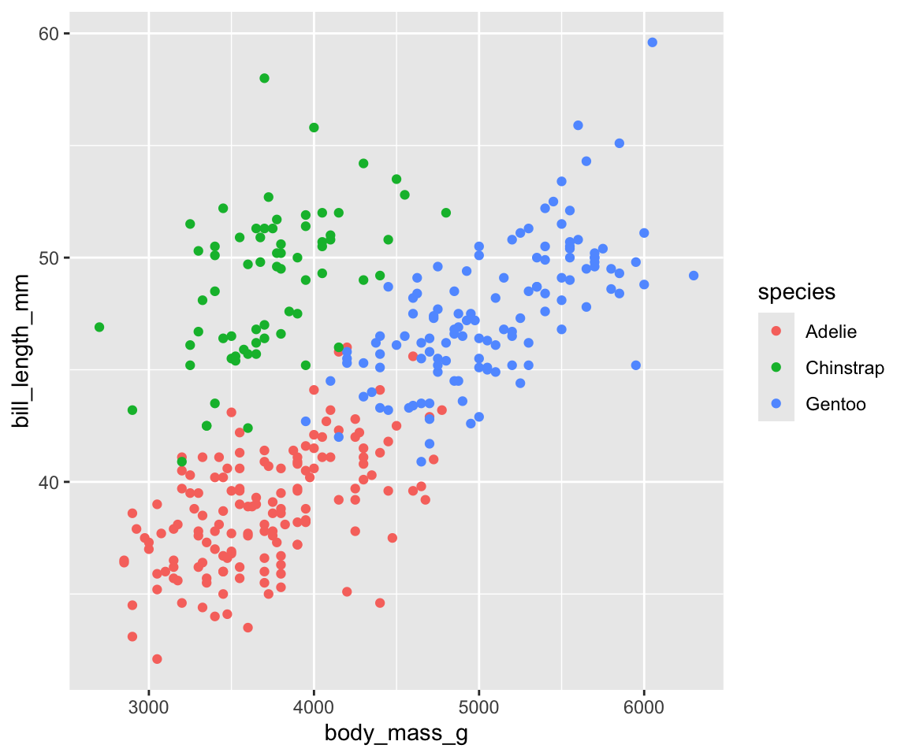
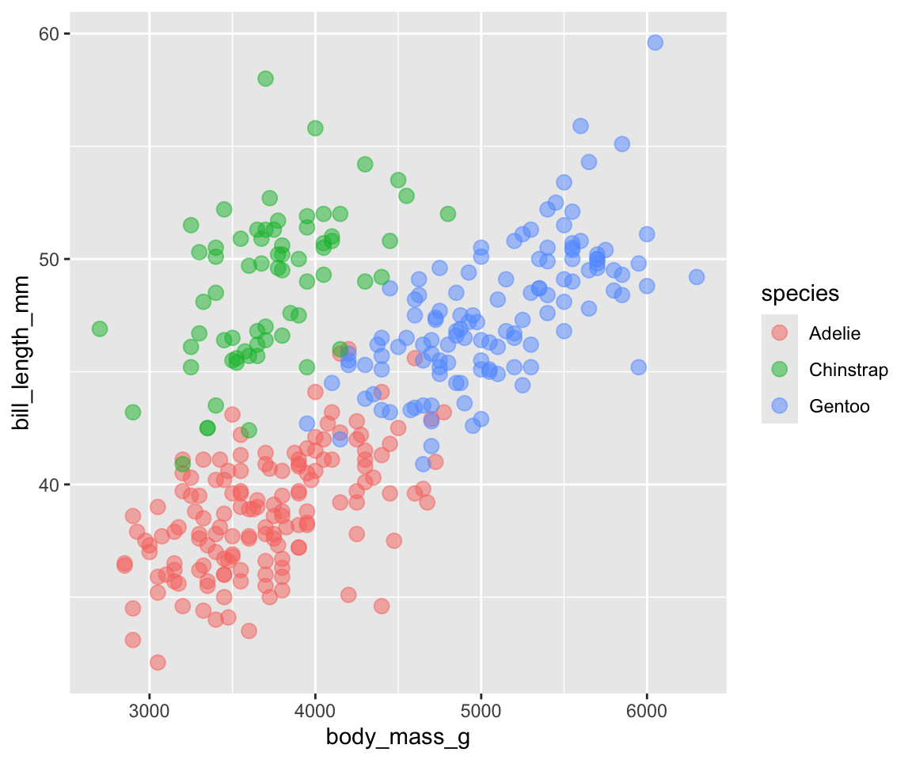
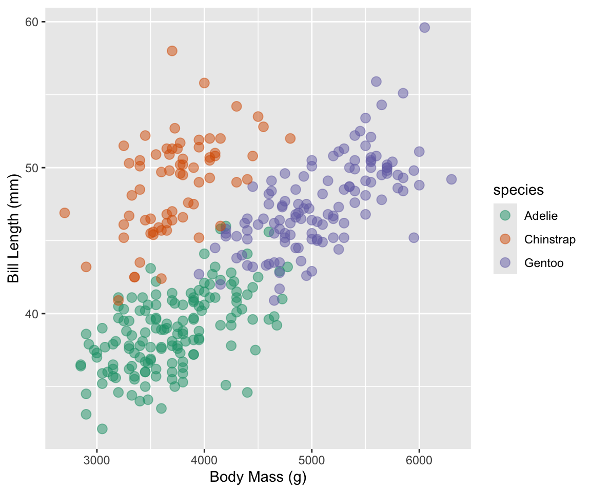
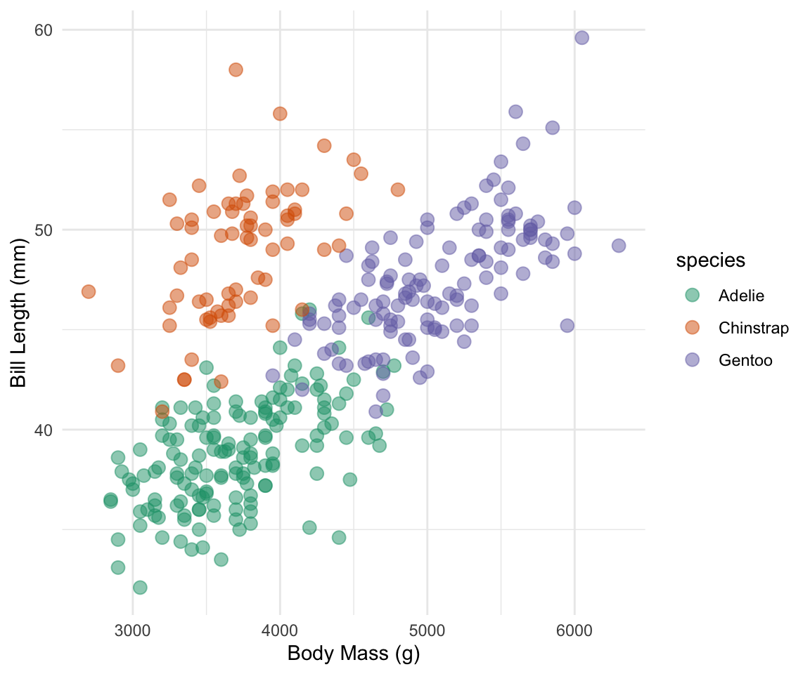
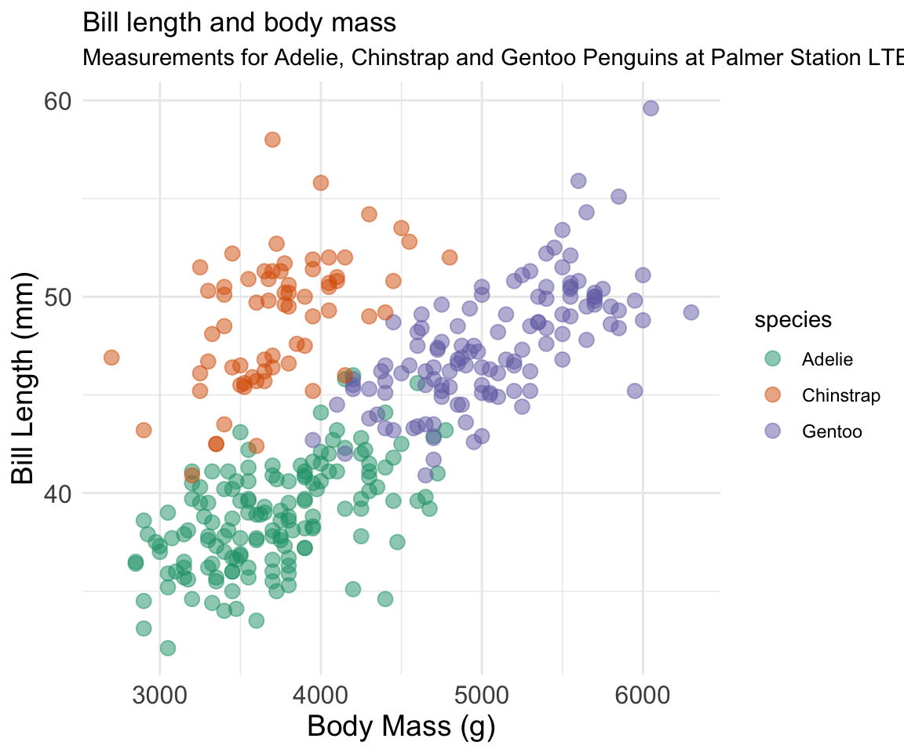
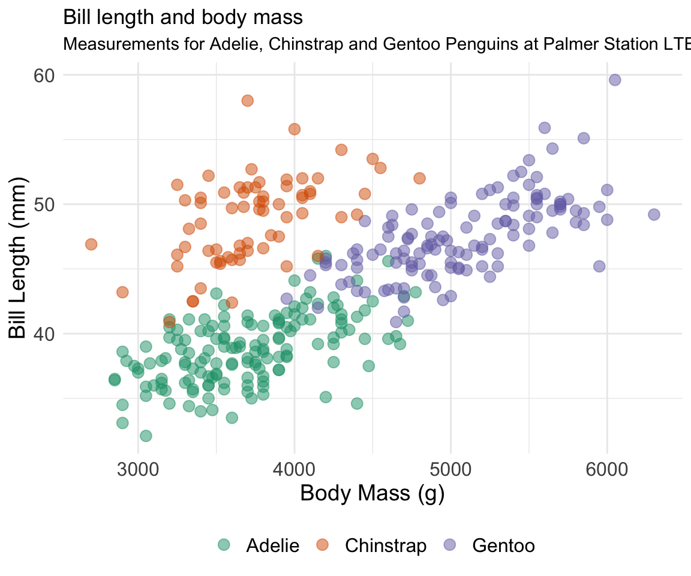
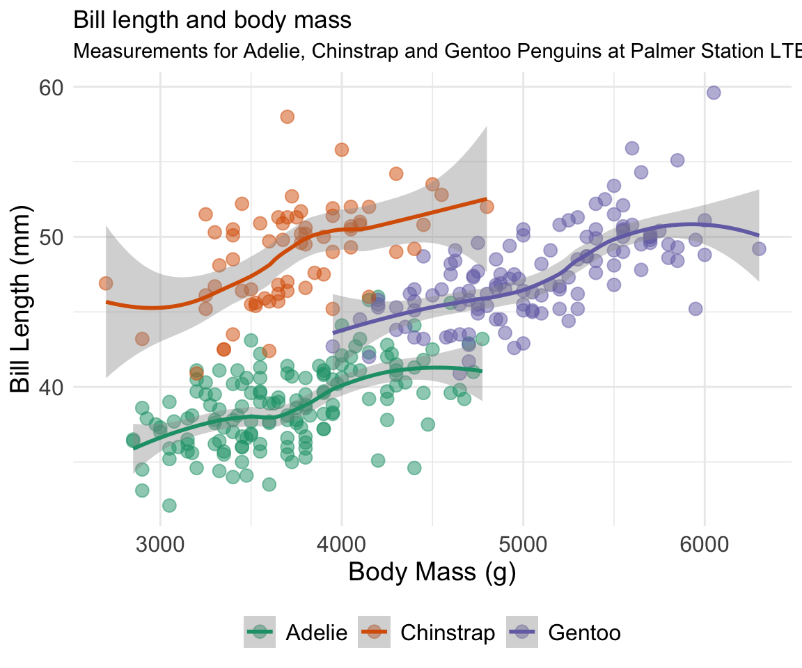

ggplot2 is an R package for producing graphics, and it is particularly well suited to producing statistical graphics. ggplot2 is based on the Grammar of Graphics, which describes a series of components that make up graphs. ggplot2 allows you to build graphs out of these independent components, much like Legos. Rather than be limited to a set number of predefined graphs, you can create a vast variety of graphics by adding, removing, and mixing these components.
Today we will learn what these components are, and how we can combine them to create effective graphics in R.
Key components
Each ggplot2 plot has three key components:
Data: The dataframe you would like to plot.
Aesthetic mappings between the variables of interest in your data, and a visual property (like size, color, or position)
At least one layer. Layers describe how observations should be rendered (bars, points, etc) and are created with the geom function.
Lets Practice!
Load the libraries and data.
Let’s load in the Palmer penguin data, by importing the palmerpenguins package. If you have not already installed this package, you can do so now by running install.packages('palmerpenguins') in your R console. We will also load our libraries for plotting.
The following objects are masked from 'package:datasets':
penguins, penguins_raw
# load in datasetdata(package ="palmerpenguins")
Explore the data
Let’s explore the contents of the data. We can use the head command to look at the first few rows of the data.
head(penguins)
# A tibble: 6 × 8
species island bill_length_mm bill_depth_mm flipper_length_mm body_mass_g
<fct> <fct> <dbl> <dbl> <int> <int>
1 Adelie Torgersen 39.1 18.7 181 3750
2 Adelie Torgersen 39.5 17.4 186 3800
3 Adelie Torgersen 40.3 18 195 3250
4 Adelie Torgersen NA NA NA NA
5 Adelie Torgersen 36.7 19.3 193 3450
6 Adelie Torgersen 39.3 20.6 190 3650
# ℹ 2 more variables: sex <fct>, year <int>
Using ggplot2
Plotting Data
When we create a plot with ggplot2() we do it incrementally, by adding a layer at a time. Lets begin by calling ggplot() and passing our dataset (penguin).
Activity
What happens when we run: ggplot(data = penguins)?
ggplot(data = penguins)
Nothing is produced! This is because we need to add a layer. Let’s add a geom layer, which will specify the geometric object we want to use to draw each observation. Let’s use geom_point() to create a scatter plot. Try to run the code again with geom_point() added and see what happens?
ggplot(data = penguins) +geom_point()
We received an error because we haven’t specified what elements of our data we want to plot.
Lets map to variables in our data to aesthetic elements. In this case let’s map body_mass_g to the x-axis, and bill_length_mm to the y-axis.
ggplot(data = penguins) +geom_point(aes(x = body_mass_g, y = bill_length_mm))
Warning: Removed 2 rows containing missing values or values outside the scale range
(`geom_point()`).

It worked!
Modifying Aesthetics
Now lets configure another aesthetic of geom_point() by specifying a color for the points, using the argument color. Lets use the color "steelblue".
Activity
Add color = "steelblue" as an additional argument to aes() within geom_point
What happens?
ggplot(data = penguins) +geom_point(aes(x = body_mass_g, y = bill_length_mm,color ="steelblue"))
Warning: Removed 2 rows containing missing values or values outside the scale range
(`geom_point()`).

The points are colored red, even though we explicitly specified that they be steelblue. This unexpected behaviour is related to how ggplot2 handles aesthetic arguments. Those that are defined within aes() map data to an aesthetic using a scale.
Those that are defined outside of aes() are set to a fixed value. Let’s try again, but move color = "steelblue" outside of aes().
ggplot(data = penguins) +geom_point(aes(x = body_mass_g, y = bill_length_mm),color ="steelblue")
Warning: Removed 2 rows containing missing values or values outside the scale range
(`geom_point()`).

That produces the result we expected. Remember, if you want to set an aesthetic to a fixed value (such as setting points to the color steelblue) then do it outside of aes(). If you want to map some variable of your data to an aesthetic automatically, then do it insideaes()
Warning: Removed 2 rows containing missing values or values outside the scale range
(`geom_point()`).

This produces points colored by species, and automatically creates an appropriately named legend. The individual points look a little small, so let’s increase their size.
Warning: Removed 2 rows containing missing values or values outside the scale range
(`geom_point()`).

Using RColorBrewer Palettes
This is looking better, but the default use of red and green is not colorblind friendly. Let’s correct this by using a palette from RColorBrewer. Fortunately, with ggplot2 we can pass the palette directly in to ggplot2:
Warning: Removed 2 rows containing missing values or values outside the scale range
(`geom_point()`).

Themes
Remember, never trust the defaults. Although ggplot2 plots look much nicer than base R, that does not mean they are ready for publication. There are a few things we can do to clean this plot up. Let’s start my removing that unnecessary grey background. We can do this easily by applying the minimal theme:
Warning: Removed 2 rows containing missing values or values outside the scale range
(`geom_point()`).
Lets increase the size of our x and y label font and axis label font to make the labels more visible. To do this, we will need to manually modify the theme:
Warning: Removed 2 rows containing missing values or values outside the scale range
(`geom_point()`).

All of our modifications are lost. This is because the order of our theme matters. Because we call theme_minimal() after theme(), we overwrite any changes we made with the defaults from theme_minimal(). If we want to modify how theme_minimal() looks we do it after calling theme_minimal().
Creating Titles (and Subtitles)
Now let’s complete our plot with a title and subtitle:
ggplot(data = penguins) +geom_point(aes(x = body_mass_g, y = bill_length_mm,color = species),size =3,alpha = .5) +scale_color_brewer(palette ="Dark2") +xlab("Body Mass (g)") +ylab("Bill Length (mm)") +labs(title ="Bill length and body mass",subtitle ="Measurements for Adelie, Chinstrap and Gentoo Penguins at Palmer Station LTER") +theme_minimal() +theme(axis.title.x =element_text(size =14),axis.title.y =element_text(size =14),axis.text =element_text(size =12))
Warning: Removed 2 rows containing missing values or values outside the scale range
(`geom_point()`).

Modifying Legends
Now lets cleanup our legend. The species are made clear in the subtitle, so we can remove the legend title.
ggplot(data = penguins) +geom_point(aes(x = body_mass_g, y = bill_length_mm,color = species),size =3,alpha = .5) +scale_color_brewer(palette ="Dark2") +xlab("Body Mass (g)") +ylab("Bill Length (mm)") +labs(title ="Bill length and body mass",subtitle ="Measurements for Adelie, Chinstrap and Gentoo Penguins at Palmer Station LTER") +theme_minimal() +theme(axis.title.x =element_text(size =14),axis.title.y =element_text(size =14),axis.text =element_text(size =12),legend.title =element_blank(),legend.text =element_text(size =12),legend.position ="bottom")
Warning: Removed 2 rows containing missing values or values outside the scale range
(`geom_point()`).

Saving Visualizations
Now that we have a publication ready visualization, let’s save it using the ggsave function. ggsave makes saving our visualizations easier than using dev.off().
ggplot(data = penguins) +geom_point(aes(x = body_mass_g, y = bill_length_mm,color = species),size =3,alpha = .5) +scale_color_brewer(palette ="Dark2") +xlab("Body Mass (g)") +ylab("Bill Length (mm)") +labs(title ="Bill length and body mass",subtitle ="Measurements for Adelie, Chinstrap and Gentoo Penguins at Palmer Station LTER") +theme_minimal() +theme(axis.title.x =element_text(size =14),axis.title.y =element_text(size =14),axis.text =element_text(size =12),legend.title =element_blank(),legend.text =element_text(size =12),legend.position ="bottom")
Warning: Removed 2 rows containing missing values or values outside the scale range
(`geom_point()`).
Warning: Removed 2 rows containing missing values or values outside the scale range
(`geom_point()`).
Adding Statistical Summaries
Now let’s add a statistical summary. we will use the geom_smooth() layer to add fit a smoothed line to each group, along with confidence intervals. The default method (when there is less than 1000 points) is locally estimated scatterplot smoothing (LOESS) which is a generalization of a moving average and polynomial regression.
ggplot(data = penguins) +geom_point(aes(x = body_mass_g, y = bill_length_mm,color = species),size =3,alpha = .5) +geom_smooth(aes(x = body_mass_g,y = bill_length_mm,color = species)) +scale_color_brewer(palette ="Dark2") +xlab("Body Mass (g)") +ylab("Bill Length (mm)") +labs(title ="Bill length and body mass",subtitle ="Measurements for Adelie, Chinstrap and Gentoo Penguins at Palmer Station LTER") +theme_minimal() +theme(axis.title.x =element_text(size =14),axis.title.y =element_text(size =14),axis.text =element_text(size =12),legend.title =element_blank(),legend.text =element_text(size =12),legend.position ="bottom")
`geom_smooth()` using method = 'loess' and formula = 'y ~ x'
Warning: Removed 2 rows containing non-finite outside the scale range
(`stat_smooth()`).
Warning: Removed 2 rows containing missing values or values outside the scale range
(`geom_point()`).
Local vs Global Aesthetics
Do you notice how we had to repeat the aes() arguments for geom_point() and geom_smooth()? This seems redundant. Right now we declare the aesthetics every time we add a new geom layer, but if the aesthetics are the same for every layer, we can just declare them once. Aesthetics declared in ggplot() are global, and apply to every layer. Aesthetics applied to a specific geom layer, such as geom_point() are local, and only apply to that geom layer.
ggplot(data = penguins,aes(x = body_mass_g,y = bill_length_mm,color = species)) +geom_point(size =3,alpha = .5) +geom_smooth() +scale_color_brewer(palette ="Dark2") +xlab("Body Mass (g)") +ylab("Bill Length (mm)") +labs(title ="Bill length and body mass",subtitle ="Measurements for Adelie, Chinstrap and Gentoo Penguins at Palmer Station LTER") +theme_minimal() +theme(axis.title.x =element_text(size =14),axis.title.y =element_text(size =14),axis.text =element_text(size =12),legend.title =element_blank(),legend.text =element_text(size =12),legend.position ="bottom")
`geom_smooth()` using method = 'loess' and formula = 'y ~ x'
Warning: Removed 2 rows containing non-finite outside the scale range
(`stat_smooth()`).
Warning: Removed 2 rows containing missing values or values outside the scale range
(`geom_point()`).

Facets
If our data is too dense, we can split it into small multiples using facets:
ggplot(data = penguins,aes(x = flipper_length_mm,y = bill_length_mm,color = species)) +geom_point(size =3,alpha = .5) +geom_smooth() +facet_wrap(~species, nrow =3) +scale_color_brewer(palette ="Dark2") +xlab("Flipper Length (mm)") +ylab("Bill Length (mm)") +labs(title ="Bill length and body mass",subtitle ="Measurements for Adelie, Chinstrap and Gentoo Penguins at Palmer Station LTER") +theme_minimal() +theme(axis.title.x =element_text(size =14),axis.title.y =element_text(size =14),axis.text =element_text(size =12),legend.title =element_blank(),legend.text =element_text(size =12),legend.position ="none")
`geom_smooth()` using method = 'loess' and formula = 'y ~ x'
Warning: Removed 2 rows containing non-finite outside the scale range
(`stat_smooth()`).
Warning: Removed 2 rows containing missing values or values outside the scale range
(`geom_point()`).